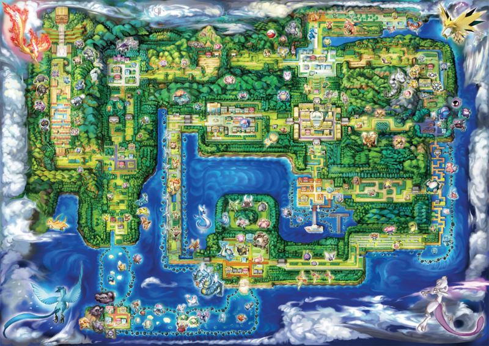

Kanto (カントー Kantoo)
Region information
| Professor | : | Professor Oak |
|---|---|---|
| Number of Pokémon | : | 153 |
| Starter Pokémon | : | Bulbasaur Charmander Squirtle Pikachu (Let's Go, Pikachu!) Eevee (Let's Go, Eevee!) |
| Rivals | : | Blue Trace |
| Crime organization | : | Team Rocket |
| Anime saga | : | Pokémon (1997 series) Pokémon (2020 series) |
| Manga arcs | : | Red, Green & Blue arc Yellow arc FireRed & LeafGreen arc |
About region
Kanto is the first region in the Pokémon universe and in the popular series, games and anime. It was then followed by Johto, Hoenn, Sinnoh, Unova, Kalos, Alola, and Galar. It is modeled and named after the Kantō region of Japan, which includes, amongst other cities, the capital Tōkyō, where Game Freak is headquartered. Kanto is the only one that shares its name with a real-world location. The resemblance between the bay formations seen on the in-game map and the actual Sagami Bay, Suruga Bay, and Tokyo Bay formations is particularly striking. Kanto also has some elements of Chūbu.
Kanto lies to the east of Johto; they presumably make up a small continent; to the south of Kanto are the Sevii and Orange Islands. Hoenn, introduced in Pokémon Ruby, Sapphire, and Emerald, is supposedly further to the southwest. Routes located wholly within Kanto are numbered 1 to 25; routes 26, 27, and 28 connect Kanto with Johto. Supposedly to the north of this continent is the Sinnoh region. Unova is in a considerable distance away and it's unknown where both it and Kalos are in relation to Kanto.
In the first generation of games, Pokémon Red, Blue, and Yellow, Kanto was the only region to explore, featuring a variety of environments, such as urban locales and mountainous, wooded and oceanic routes. In Gold, Silver and Crystal, which introduced Johto, the player character character was able to travel to Kanto (by either steamboat, surfing or the magnet train) travelling between Goldenrod City in Johto and Saffron City in Kanto after completing their journeys through Johto. Since these games occupied an in-universe timeline a few years after their predecessors, some changes were introduced. In late 2004, Pokémon Red, Pokémon Green, and Pokémon Blue were remade as new titles for the Game Boy Advance called Pokémon FireRed and LeafGreen, which incorporated new elements. In late 2018, Pokémon Yellow was remade as two new games for the Nintendo Switch called Pokémon: Let's Go, Pikachu! and Let's Go, Eevee!.
Two areas of the Kanto region, Saffron City and the Pokémon Stadium, are playable in HAL Laboratory's popular Super Smash Bros. fighting games. In the Nintendo 64 version, Saffron City is a cityscape battlefield while the Pokémon Stadium is a basic arena and transforms to water, grass, rock and fire type battlefields in Super Smash Bros. Melee. With the release of Super Smash Bros. Brawl comes a new Pokémon Stadium 2 to play on.
In the anime, the protagonist Ash Ketchum is a resident of Pallet Town, and began his journey by touring Pokémon gyms in Kanto with Misty from Cerulean City and Brock from Pewter City. Season 1 and Season 9 of the anime are set in Kanto. Location names in the anime sometimes differ from those in the games. Season 23 and 24 of the anime is also the set in Kanto as Ash and his new friend Goh from Vermilion City work as research assistants.
Cities and towns
Pallet Town
Pallet Town (マサラタウン, Masara Taun) is the hometown of the protagonist Ash Ketchum, of the Pokémon anime, and the Red of the Pokémon Adventures. It is also the home of Professor Oak, who gets them started with their first Pokémon, as well as Professor Oak's grandson (the player character-named rival in the games, Gary Oak in the anime, and Blue in Pokémon Adventures). It is also a hometown to Delia Ketchum, the main protagonist, Ash Ketchum's mother. It is based on Satoshi Tajiri's hometown, Shimoda.
Viridian City
Based on: Hakone
Viridian City (トキワシティ, Tokiwa Shiti) is the first major city where the player character visits in the games. It has the first Pokémon Centers and Poké Marts found in the game. At the Poké Mart, the player character will receive a package to deliver to Professor Oak in exchange for the Pokédex and 5 Poké Balls. When the player character first arrives, the gym is locked. Once the other seven Gym Leaders are defeated, the Viridian Gym Leader, who is revealed to be Giovanni, will re-open his Ground-type gym.
Pewter City
Based on: Maebashi
Pewter City (ニビシティ, Nibi Shiti) located northwest of the region, between Viridian Forest and Mt. Moon. Pewter City is the first available city with a Gym Leader. Brock is the Pewter City Gym Leader and specializes in Rock-type Pokémon. The city has two exits, to the east is Route 3 leading to Route 4 and Mt. Moon and in the south is Route 2 leading to Viridian City.
Cerulean City
Cerulean City (ハナダシティ, Hanada Shiti) is a seaside city located in the northern Kanto is the third city visited in the region by the protagonist, and the location of the second Gym Leader, Misty. She is a Water-type Trainer, who is in charge of a swimming pool-style arena. It has some remarkable places such as a bike shop and the gym. It is situated near the sea inlet to the north with Saffron city to the south and Mt. Moon to the west.
Vermilion City
Based on: Yokohama
Vermilion City (クチバシティ, Kuchiba Shiti) is a large port city that is home to the Electric-type gym leader Lt. Surge. Vermilion City is the only Kanto city to have a port, which houses a luxurious ship known as the S.S Anne. The S. S Anne sails around the world and returns to Vermilion city once in a year. It sails from Olivine town in Johto to Vermilion harbor. There, the player character will encounter the rival again and battle him. After the player character exits with the HM Cut, the ship will sail away. In FireRed and LeafGreen, after the player character earns the seventh gym badge, the port will be reopened again; it is used to connect the Kanto region with the Sevii Islands.
Lavender Town
Based on: Narita
Lavender Town (シオンタウン, Shion Taun) is one of the smallest towns in the region. The town is believed to be haunted by Ghost-type Pokémon. Residents of the town include the kind Mr. Fuji, and the Name Rater, who allows the player character to change the nicknames of his or her Pokémon.
Celadon City
Based on: Shinjuku, Tokyo
Celadon City (タマムシシティ, Tamamushi Shiti) is the second largest city in the Kanto Region. It is home to a department store (the largest Poké Mart in Kanto), a hotel, a Game Corner and a mansion. The fourth Gym is found in Celadon City and houses Erika and her Trainers, who use mainly Grass-type Pokémon. In the Anime, it is mentioned that this city is famous for its perfumes and scents. Erika here is also the manager of a perfume company.
Fuchsia City
Based on: Tateyama
Fuchsia City (セキチクシティ, Sekichiku Shiti) is the southernmost city on the Kanto mainland. It houses the Safari Zone and a Pokémon zoo. Koga is the Fuchsia City Gym Leader, and he uses Poison-type Pokémon. His gym contains invisible walls that force the player character to go around while battling Trainers. In Gold, Silver, and Crystal, he is replaced by his daughter, Janine, since Koga was accepted into the Elite Four.
Saffron City
Saffron City (ヤマブキシティ, Yamabuki Shiti) is the largest city of Kanto, possibly based on Tokyo. It is most notable for housing Silph Co., a massive office complex that spans 11 floors. It is also notable for having two separate gyms, though one is unofficial.
Cinnabar Island
Based on: Izu Ōshima
Cinnabar Island (グレンじま or グレンタウン, Guren-jima or Guren Taun) is home to a laboratory and an old, abandoned mansion. You can go to the laboratory to trade some Pokémon and identify the fossils found in Pewter City and Mt. Moon. The Gym is initially locked; after retrieving the key from the Pokémon Mansion, the player character can challenge the Gym Leader Blaine, a Fire-type Pokémon Trainer.
Island
-
Other locations
Viridian Forest
Viridian Forest (トキワのもり, Tokiwa no Mori) is a forest that lies between Viridian City and Pewter City. The woods are filled with a large quantity of Bug Pokémon and Bug-using Trainers. Inside, the Pokémon franchise's mascot, Pikachu, can be found. In Gold, Silver, and Crystal, the forest has been cut down and the tall grass removed, so wild Pokémon cannot be caught there anymore. In HeartGold and SoulSilver, Viridian Forest made a return.
Mt. Moon
Mt. Moon (オツキミやま, Otsukimi-yama) is a mountain that lies between Pewter City and Cerulean City. As it cannot be climbed, player characters must hike through the cave area. It is a three-floor dungeon with multiple paths. At the end of the path, a Super Nerd holds two fossils. After the player character defeats him, he concedes and lets the player character take one fossil, which can become either Omanyte or Kabuto. In the Anime, it is shown as a worship place for Clefairy.
Cerulean Cave
Near the city is the Cerulean Cave (ハナダのどうくつ, Hanada no Dōkutsu), popularly known as the "Unknown Dungeon" (ななしのどうくつ, Nanashi no Dōkutsu). It is an optional dungeon filled with high-leveled Pokémon and is the home to the strongest legendary Pokémon in Kanto, Mewtwo. The dungeon is so fearsome that a guard blocks the entrance, and will not let the player character through until he or she has beaten the Elite Four. In FireRed and LeafGreen, it cannot be accessed until the player character has repaired the machine on One Island.
Rock Tunnel
Rock Tunnel (イワヤマトンネル, Iwa Yama Tonneru) lit. "rock mountain tunnel" is a pitch-black cave that connects Cerulean City and Lavender Town. Unlike later games, the cave is not completely dark. The walls of the cave can still be seen which allows the player character to go through without the use of the HM Flash.
Diglett's Cave
Diglett's Cave is a long tunnel that was dug by wild Diglett and Dugtrio. Its entrances are south of Pewter City and east of Vermilion City. After the Trainer enters Cerulean City, the only foot-path back to Pewter City, Viridian City, and Pallet Town is through this cave. Wild Diglett and Dugtrio can be found in here.
Forest of Pikachu
Forest of Pikachu was a small forest clearing that had clans of Pikachu. It was only in the anime. The main protagonist Ash Ketchum and the group came here as they find other Pikachu in their adventure. Ash also decides to leave his Pikachu in this forest thinking it was good for it to stay here but changes his mind later.
Safari Zone
The Safari Zone (サファリゾーン, Safari Zōn) is a wide-open area in Fuchsia City where the player character can play a Pokémon-catching game. For a small fee, the player characters are given thirty Safari Balls (a special type of Poké Ball that is green) and may capture Pokémon in the Safari Zone until they have walked 500 steps. player characters may not use Pokémon of their own to battle the wild Pokémon in the Safari Zone. Several species of Pokémon are found nowhere else. In Gold, Silver, and Crystal, the Safari Zone is not available because Baoba is on vacation. It reappears in FireRed and LeafGreen, the option to save while there is removed; this could have been because of the Glitch City bug.
Seafoam Island
The Seafoam Islands (ふたごじま, Futago-jima) are a set of caves between Fuchsia City and Cinnabar Island. The legendary Pokémon Articuno resides in this area. During the second generation, as Cinnabar Island was destroyed by a volcano, Blaine moved his gym to the Seafoam Islands. Articuno has fled. In HeartGold and SoulSilver, Seafoam Islands return and Articuno returns.
Power Plant
The Power Plant (むじんはつでんしょ, Mujin Hatsudensho) lit. "unmanned power plant" is an abandoned building found at the end of a waterway just before the entrance to Rock Tunnel. At the end of the building is the legendary Pokémon Zapdos. In Gold, Silver, and Crystal, the Power Plant has been reactivated and is used to run the Magnet Train. Zapdos is no longer there.
Victory Road
The Kanto Victory Road (チャンピオンロード, Chanpion Rōdo) is a cave that holds the only way to the Indigo Plateau, accessed to the west and north of Viridian City. The protagonist must have all eight badges to enter. Victory Road contains many high-level Pokémon, including the legendary Pokémon Moltres in the original Red and Blue versions of Pokémon. However, in the FireRed and LeafGreen remakes, Moltres has been moved to the Mt. Ember on the Sevii Islands.
Indigo Plateau
The Indigo Plateau (セキエイこうげん, Sekiei Kōgen) is the headquarters of the Pokémon League, located in northwest Kanto. In order to reach Indigo Plateau, Trainers must collect all eight Gym Badges of Kanto or Johto and pass through Victory Road, a cave located at the foot of the Plateau.
Areas of Interest
-
Landmarks
-
Places of Interest
-